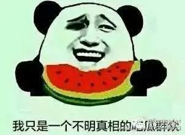
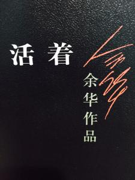

基本情况
我是大一的一名，男生 我来到这所学校学习了
具体情况

姓名：吴志威
出生年月：1998.4
籍贯：浙江金华
专业：软件工程
学号：16036822
政治面貌：群众
联系方式
移动电话：15088667649
电子邮件：1452682424@qq.com
爱好



听歌；这些是推荐歌曲：love yourself what do you mean
看电影；这些是推荐电影：肖申克的救赎 盗梦空间
看小说；这些是推荐小说：为奴十二年 活着
自我评价
本人性格开朗，稳重，有活力，待人热情，真诚。工作认真负责，积极主动，能吃苦耐劳:
喜欢思考，虚心与人交流，以长补短。有较强的组织能力。
我的理念是：在年轻的季节我甘愿吃苦受累，只愿通过自己富有激情、积极主动的努力实现自身价值并在工作中做出最大的贡献：作为初学者，我具备出色的学习能力并且乐于学习、敢于创新，不断追求卓越;
作为参与者，我具备诚实可信的品格、富有团队合作精神;
作为领导者，我具备做事干练、果断的风格，良好的沟通和人际协调能力
受过系统的经济文化相关专业知识训练，有很强的忍耐力、意志力和吃苦耐劳的品质，对工作认真负责，积极进取，个性乐观执着，敢于面对困难与挑战。